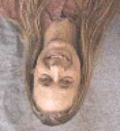

Lee's pictures
umop-apisdn papuadsns aW

If you really want to waste network bandwidth to satisfy my ego...
The UniProcessors
"The UniProcessors: a death defying unicycling and juggling troupe,
staffed by a typical cross section of computer science department
glitterati" -
The Age,
19/8/92
"The UniProcessors - a fabulous troupe of
juggling
and
unicycling
computer scientists" -
Uni News,
13/8/93
Fire Breathing
By the way, if you are tempted to emulate these feats, please read my
hints on fire breathing.
-
The first publicity shot
(23k): Me fire breathing on a unicycle.
Photo by Michael Silver.
-
Hot lips!
(13k): Me fire breathing;
Philip Dart toasting marshmallows;
Mark Bates
looking devilish and
Simon Rodger
taking a quick swig of shellite
-
Hair raising!
(30k): Me fire breathing;
Peter Stuckey ducking
-
Mushroom cloud
(10k):
Simon Rodger fire breathing; Mark Bates; Philip Dart; me
-
The first publicity shot
(23k): Me fire breathing on a unicycle.
Photo by Michael Silver.
-
Sorry, I've been asked to remove these images because they belong to
News Corp:-(.
Steep!
(32k or 102k):
Its been done on skis, inline skates, naked, but never before on a
unicycle. Me unicycling up the Redmond Barry building. Photo by Craig
Borrow.
-
Practising
(39k): Me juggling clubs on a unicycle and Peter Stuckey
juggling fire clubs.
Photo by Michael Silver.
-
Practising
(39k): Me juggling clubs on a unicycle and Peter Stuckey
juggling fire clubs.
Photo by Michael Silver.
-
Stretch!
(20k or
169k):
If only I was a bit taller, or it wasn't so overhanging, or there was a
decent left foot hold, or I had positioned my right foot better...
Me leading Dreadnought variant (22), Arapiles.
Photo by Rob Day.
-
Now reach for the finger lock
(27k or
117k):
Dreadnought variant (22), Arapiles.
Photo by Rob Day.
-
Boogey 'till you puke (21), Camel's hump
Lee
{kind=link}
{kind=link}
{kind=link}
{kind=link}
{kind=link}
{kind=link}
{kind=link}
{kind=link}
{kind=link}
{kind=link}
{kind=link}